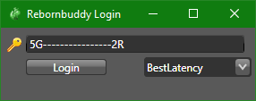
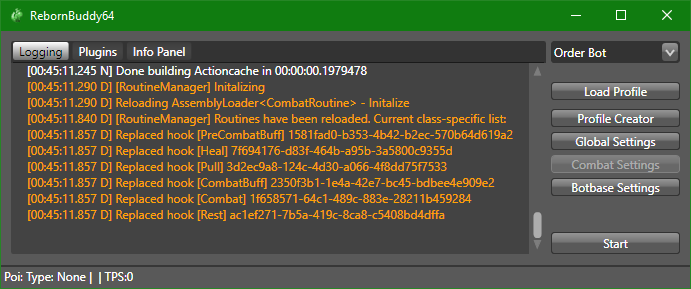
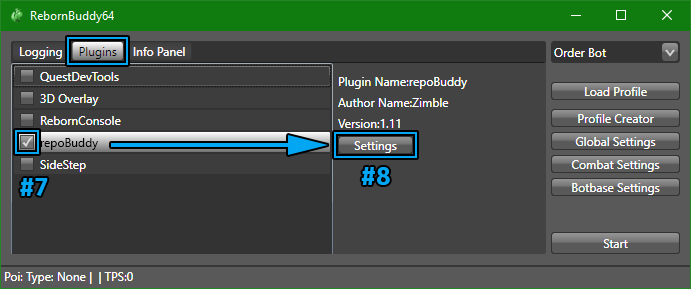
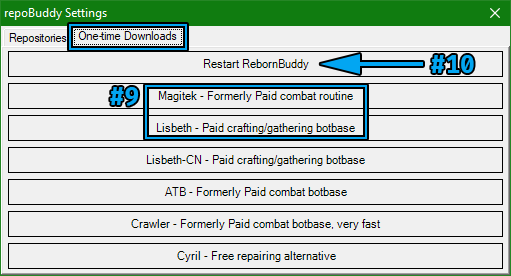

Getting Started¶
RebornBuddy is a customizable bot for Final Fantasy XIV. It automates tedious gameplay like grinding or mass crafting, allowing you to relax or even AFK while it does your bidding.
Add-ons are the lifeblood of RebornBuddy -- the bot is almost useless without them. Luckily, there are plenty of free and paid community add-ons to do almost anything. If not, you can always create or commission your own custom add-ons!
This page will cover buying and installing RebornBuddy itself, then getting popular add-ons for a good start.
Buying RebornBuddy¶
RebornBuddy requires a monthly subscription and product keys are available on RebornBuddy.com. Unlike the game's own subscription, where you endlessly top-up the same account, RebornBuddy keys disposable and you simply get a new one as they expire. This also means it won't auto-renew and charge you unexpectedly.
Keys are available in 1 or 6 month increments and with 1 or 3 simultaneous sessions. Multi-session keys let you log into the bot multiple times at once, such as when multi-boxing or sharing keys with trusted friends. The bot generally costs less when buying more months or sessions at once.
Can't find your RebornBuddy key?
Keys are delivered in an e-mail titled "RebornBuddy Key Purchase" -- wait a bit longer or check junk mail folders. If the e-mail is still missing and you're already registered on Buddy Auth, the new key might be available on the Keys page.
For further support, create a ticket on RebornBuddy's ZenDesk.
Registering on Buddy Auth¶
After buying, register on Buddy Auth with the same e-mail used during purchase. This site offers key lists and session management -- useful if the bot crashes and prevents logins due to "max sessions". If your new key isn't already listed under the Keys tab, simply add it to your Buddy Auth account under the Attach Key tab.
Installing RebornBuddy¶
- Download RebornBuddy.
- Before extracting, unblock the
.zipfile to avoid issues later. - Extract RebornBuddy to a known location.
-
In Windows Defender, exclude the entire RebornBuddy folder.
On Anti-Virus Exclusions
Please be safe and use critical thinking when excluding things from anti-virus. RebornBuddy is probably okay and doesn't trigger VirusTotal, but this is your own informed choice to make. In this case, Windows Defender dislikes that RebornBuddy (necessarily) interacts with the game's memory, so excluding it will save you the pain of
RebornBuddy.exebeing quarantined/deleted every update. -
While fully logged into a character, launch
RebornBuddy.exe. -
Insert your product key and click Login:

-
Wait for the bot to fully load and logs to stop scrolling.

If you've made it this far without incident, congratulations! The next step is installing key add-ons so the bot is actually useful.
Installing RepoBuddy and Other Add-Ons¶
RepoBuddy is recommended to easily install and automatically update all types of add-ons. It includes the most popular stuff by default, so RepoBuddy is probably the only plugin most users need to install manually.
- Close RebornBuddy if it's already running.
- Install Microsoft Visual C++ 2010 SP1. Choose the
vcredist_x64.exeversion. - Download
repoBuddy-master.zip. - Before extracting, unblock the
.zipfile to avoid issues later. - Extract RepoBuddy to
RebornBuddy\Plugins\, removing-masterso it looks like:RebornBuddy └── Plugins └── repoBuddy ├── repoBuddy.cs └── ... - Launch RebornBuddy.
- In the Plugins tab, enable "repoBuddy" and wait for the bot to restart.
-
Click the "repoBuddy" line, then the Settings button to the right.

-
Under One-Time Downloads, install "Magitek" and "Lisbeth".
-
At the top, click "Restart RebornBuddy".

-
Wait for installation to finish and the logs to show:
[repoBuddy] RB fully loaded!
You now have most everything needed to use RebornBuddy like a pro, including auto-updates!
For a full list of add-ons that may not be included with RepoBuddy, see the Downloads page.